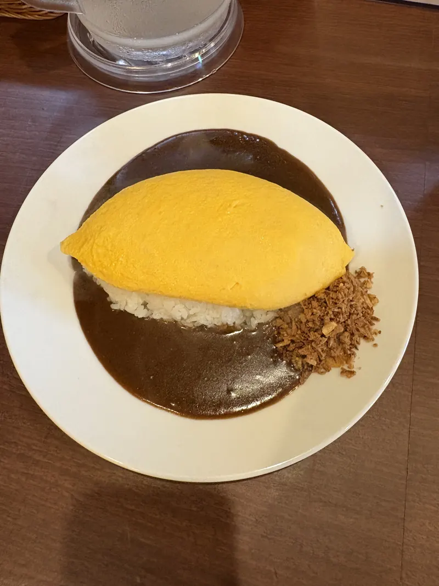
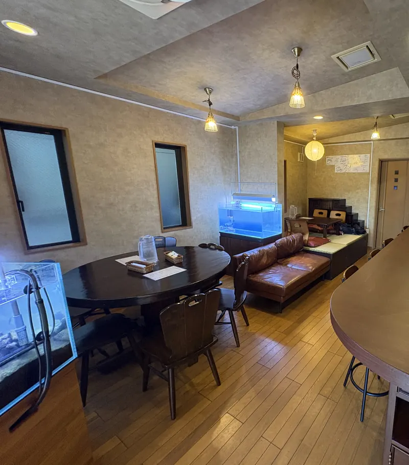
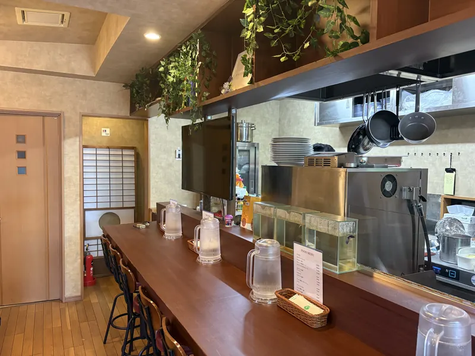
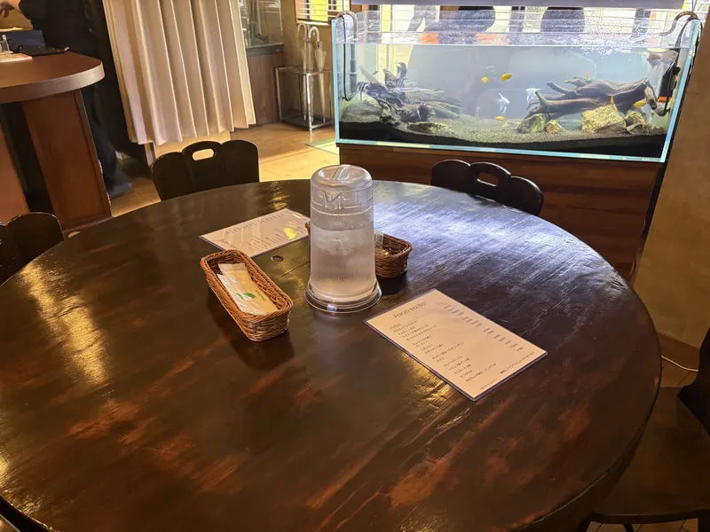
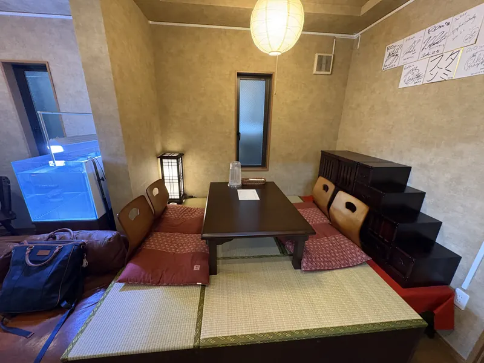

お知らせ
- ディナーの営業時間は 17:00〜20:00（ラストオーダー 19:30）です。
- 旧古河庭園の秋のバラが見頃の季節です。お散歩のあとのランチにどうぞ。
- 品川区・西小山から、駒込・霜降銀座商店街に移転しました。
Our omurice
主役は、卵の下の
チキンライス。
オムライスの味を決めるのは、卵に包まれたチキンライスだと考えています。ひと手間かけたチキンライスを、焼きたてのやわらかな卵で包みます。
スプーンを入れると、卵がとろりとほどけます。ソースは4種類。大盛りとチーズインは、どれも100円で追加できます。

-
ケチャップ
甘酸っぱい、いちばん定番の味。
1,200円
-
オムカレー 辛口
ふわとろ卵に、辛口のカレー。
1,300円
-
明太子ソース
明太子の風味をきかせたソースで。
1,400円
-
デミグラスソース
濃厚な、洋食屋らしい味。
1,500円
価格は税込です。大盛り +100円 ／ チーズイン +100円
Inside
おひとりでも、
家族でも。
木のカウンター、水槽のそばの丸テーブル、靴を脱いでくつろげる座敷。全20席、全席禁煙です。

-

カウンター10席
おひとりさまに。厨房の様子が見える席です。
-

テーブル6席
水槽を眺めながら、ゆっくりと。
-

座敷4席
靴を脱いでくつろげます。小さなお子さま連れにも。
Our little friend
お店の仲間、
ぶーくん。
ブタバナガメ（通称スッポンモドキ）のぶーくんです。ぶたのような鼻と、ひれのような前あしで、水槽をのんびり泳いでいます。
ときどき、やわらかい歯ブラシで甲羅をみがいてもらっています。オムライスを食べに来たら、ぶーくんにも会いにきてください。
ぶーくんの様子は X（@RiO_RtoM）でKomagome walk
庭園めぐりの、
あとのお昼に。
お店のある霜降銀座商店街は、旧古河庭園と六義園のあいだにあります。お散歩のあとに、温かいオムライスはいかがですか。
-
秋 10月中旬〜11月 ／ 春 5月〜6月
旧古河庭園
洋館とバラ園で知られる庭園。秋と春のバラの季節が見どころです。
いま見頃の季節 -
11月下旬〜12月上旬
六義園
江戸の大名庭園。紅葉の季節は夜のライトアップもあります。ライトアップ前の早めの夕食にどうぞ。
いま見頃の季節 -
3月下旬〜4月
駒込の桜
駒込は桜の「ソメイヨシノ」が生まれた染井村のあったまち。駅のまわりや染井霊園が桜色になります。
いま見頃の季節 -
いつでも
霜降銀座・染井銀座商店街
昔ながらのお店が続く、歩いて楽しい商店街。食後の散歩にちょうどいい長さです。
Hours & Access
ご来店のご案内
営業時間
| 火 | 11:00–15:30 | 17:00–20:00L.O. 19:30 |
|---|---|---|
| 水 | 11:00–15:30 | 17:00–20:00L.O. 19:30 |
| 木 | 11:00–15:30 | 17:00–20:00L.O. 19:30 |
| 金 | 11:00–15:30 | 17:00–20:00L.O. 19:30 |
| 土 | 11:00–15:30 | 17:00–20:00L.O. 19:30 |
| 日 | 11:00–15:30 | 17:00–20:00L.O. 19:30 |
| 月 | 定休日 | |
臨時休業や営業時間の変更は、このページの「お知らせ」と X でお知らせします。
ご予約・お問い合わせ
営業時間内にお電話ください。
- 席数
- 20席（カウンター10・テーブル6・座敷4）
- たばこ
- 全席禁煙
- お支払い
- クレジットカード・IC決済がご利用いただけます
- デリバリー
- Uber Eats・ロケットナウ
Q & A
よくあるご質問
予約はできますか？
お電話（03-6903-6079）で承ります。
ひとりでも入りやすいですか？
カウンターが10席あります。おひとりでも気軽にどうぞ。
子ども連れでも大丈夫ですか？
靴を脱いでくつろげる座敷席（4席）があります。混み合う時間を避けたい方は、お電話でお問い合わせください。
持ち帰りやデリバリーはできますか？
Uber Eats とロケットナウでご注文いただけます。
以前は西小山にありましたか？
はい。2026年4月に品川区・西小山から、北区・西ヶ原（駒込）の霜降銀座商店街へ移転しました。